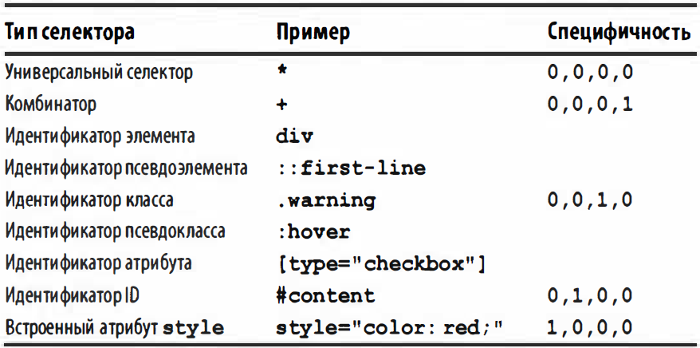

Встроенные стили
<р style="color:red; background:уеllоw;">Текст</р>
Встроенные таблицы стилей
<html><head><title></title >
<style type="text/css">
h l { color: purple; }
р { font-size: smaller; color: gray; }
</style>
</head>
</html>
Внешние таблицы стилей - Стили могут быть перечислены в отдельном файле.
Директива @import - В начале любой таблицы стилей можно разместить одну или больше директив.
<style type= "text/css">
@ import url (site.css);
@ import url (navbar.css);
@ import url (footer.css);
body { background:yellow; }
</style>
Элемент разметки link - связывания таблицы стилей с документом
<head>
<title>Document</title>
<link rel="stylesheet" type= "text/css" href="basic.css " media="all">
<link rel="stylesheet" type= "text/css" href="web.css" media= "screen">
<link rel="stylesheet" type= "text/css" href="paper.css" media= "print">
</head>
Имеется также возможность указать альтернативные таблицы стилей
<link rel="stylesheet" type="text /css" href="basic.css">
<link rel="alternate stylesheet" title= "Classic" type= "text/css" href="oldschool.css">
<link rel="alternate stylesheet "title="Futuristic" type = "text/css" href= "ЗOOOad.css">
Инструкция обработки xml-stylesheet
<?xml-stylesheet type="text/css" href="basic.css" media= "all"?>
<?xml-stylesheet type="text/css" href= "web.css" media="screen"?>
<?xml-stylesheet type="text/css" href= "paper.css" media= "print"?>
С помощью инструкции обработки xml-stylesheet можно также связать альтернативные таблицы стилей
<?xml-stylesheet type="text/css" href= "basic.css"?>
<?xml-stylesheet alternate= "yes" title="Classic" type= "text/css" href="oldschool.css"?>
<?xml-stylesheet alternate= "yes" title="Futuristic" type= "text/css" href="ЗOOOad.css"?>
Структура правил - Таблица стилей состоит из одного или нескольких правил
Селектор {
Свойство: Значение;
Свойство: Значение;
}
Комментарии
/ * Это комментарий! * /
Вычисление специфичности
Специфичность описывает вес селектора и любые связанные с ним определения.

Наследование - Элементы располагаются в форме документа в виде древовидной иерархии
html → head → title → ...
html → body → ...
Отображение на уровне блока - Для создания структурных блоков имеются следующие значения свойства:
display: blосk, listitem, tаblе, table-row-group, table-header-group, tablefooter-group, table-row, table-column-group, tablle-column, table-cell, table-caption;
Отображение на уровне строки - Для создания внутристрочных блоков имеются следующие значения свойства:
display: inline, inlineblock, inline-table, ruby;
Вставка - Особый случай представляют собой вствляемые блоки, определяемые разметкой
display: run-in;
Значения цвета - Ниже перечислены формы обозначения значений цвета
#0000FF
rqb(255, 255, 255)
rgba(0 , 0, 255, 0.5)
hsla (0, 100%, 50%, 0.5)
Отдельных цветов определены 17 следующих ключевых слов:
aqua, blасk, bluе, fuchsia, gray, green, lime, maroon, navy, olive, orange, purple, red, silver, teal, white и yellow.
currentColor - можно задать такой же цвет заднего плана, как и цвет переднего плана
background-color: currentColor;
border: lpx solid currentColor;
transparent - служит сокращенной формой для обозначения прозрачного цвета
rgba(0, 0, 0, 0)
background-color: transparent;
Числовые значения и значения в процентах
width: 500px;
width: 100%;
Абсолютные единицы измерения длины
Дюймы (in); Сантиметры (cm); Миллиметры (mm); Пункты (pt); Цицеро (рc)
Относительные единицы измерения длины
Высота шрифта (em); Высота шрифта корневого элемента (rem); X-height (ех); Ширина НУЛЯ (ch); Пиксели (рх); Единица измерения ширины области просмотра (vw); Единица измерения высоты области просмотра (vh); Минимальная единица измерения области просмотра (vm)
URL – подключение внешнего файла. В форме url (<uri>)
background: url("image.png") #00D no-repeat fixed;
Углы - выражаются в форме <angle>, где после числа типа <number>
Существуют следующие разновидности единиц измерения углов:
градусы (deg), грады (grad), радианы ( rad) и обороты (turn).
Время - Величина времени типа <time> выражается в виде неотрицательного числа типа <number> Существуют следующие разновидности единиц измерения времени:
секунды (s) и миллисекунды (ms)
Частоты - Величина частЬты типа <frequency> выражается в виде неотрицательного числа типа <number>
Существуют следующие разновидности единиц измерения частоты:
герцы (Hz) и килогерцы(kНz)
Символьные строки - Символьная строка типа <string>
СЕЛЕКТОРЫ
Обычные селекторы
* - Универсальный селектор, обеспечивает совпадение с именем любого элемента
* { }
div * р { }
Селектор по типу - обеспечивает совпадение с именем указанного элемента
body { }
р {}
Селектор порожденных элементов - позволяет выбрать элемент по его состоянию как порожденного от другого элемента
body h1 { }
tаblе tr td div ul li { }
> Селектор потомков - служит для совпадения с элементом по его состоянию как потомка другого элемента
div > р { }
ul > li { }
+ Селектор смежных родственных элементов - позволяет выбрать следующий смежный элемент, родственный другому элементу
tаblе + р { }
hl + * { }
~ Селектор следующих родственных элементов - позволяет выбрать элемент, родственный другому элементу и следующий после него
hl ~ h2 { }
div #navlinks ~ div { }
. Селектор по классу - позволяет выбрать элементы с атрибутом класса
p .urgent { }
a .external { }
.example { }
.note .caution { }
# Селектор по идентификатору - позволяет выбрать элементы, содержащие идентификатор
hl #page-title { }
body #home { }
#example { }
[ ] Простой селектор по атрибутам - позволяет выбрать любой элемент по его атрибуту
a [rel] { }
p [class] { }
= Селектор по точным значениям атрибутов
а [rel = "Start"] { }
p [class = "urgent" ] { }
~= Селектор по частичным значениям атрибутов
a [rel ~= "friend" J { }
р [ class ~= "warning" ] { }
^= Селектор по начальным подстрокам в значениях атрибутов
a [href ^= "/blog"] { }
p [class ^= "test-"] { }
$= Селектор по конечным подстрокам в значениях атрибутов
a [href $=".pdf"] { }
*= Селектор по произвольным подстрокам в значениях атрибутов
а [href *= "oreilly.com"] { }
div [class *= "port" ) { }
|= Селектор по языковым атрибутам - выбор любой элемент по атрибуту lang
html [lang |= "tr"] { }
Структурные псевдоклассы
:empty - обеспечивает совпаденrе с элементами, у которых отсутствуют порожденные узлы
p:empty { }
li:empty { }
:first-child - обеспечивает совпадение с элементом, если о:н оказывается первым потомком другого элемента
td:first-child { }
p:first-child { }
:first-of-type - обеспечивает совпадение с элементом, если он оказывается первым потомком другого элемента
td:first-of-type { }
h2:first-of-type { }
:lang - обеспечивает совпадение с элементами по их языковой кодировке.
html:lang(en) { }
*:lang(fr) { }
:last-child - обеспечивает совпадение с элементом, если он оказывается последним потомком другого элемента
td:last-child { }
p:last-child { }
:last-of-type - обеспечивает совпадение с элементом, если он оказывается последним потомком другого элемента
td:last-of-type { }
h2:last-of type { }
:nth-child (an+b) - обеспечивает совпадение с каждым n-м потомком по шаблону выбора an+b, где а и b - целые числа типа
Вместо формулы аn+b допускается употреблять ключевые слова even и odd
*:nth-child(4n+1) { }
tbody tr:nth-child(odd) { }
:nth-last-child (an+b)
*:nth-last-child(4n+l) { }
tbody tr:nth-last-child(odd) { }
:nth-last-of-type (an+b)
td:nth-last-of-type(even) { }
img:nth-last-of-type(Зn) { }
:nth-of-type (an+b)
td:nth-of-type(even) { }
img:nth-of-type(Зn) { }
:only-child - обеспечивает совпадение с элементом, являющимся единственным потомком своего родительского элемента
а img:only-child { }
tаblе div:only-child { }
:only-of-type
р em:only-of-type { }
section article:only-of-type { }
:root - обеспечивает совпадение с корневым элементом
: root { }
: root > * { }
Псевдоклассы отрицания
:not (e) - обеспечивает совпадение с каждым элементом, который не описывается простым селектором е.
ul *:not(li) { }
Псевдоклассы взаимодействия
:active - активация
a:active { }
:checked - выбран
input:checked { }
input [type="checkbox"]:checked { }
:disabled - отключен
input:disabled { }
:enabled - включен
input:enabled { }
:focus - получение фокуса
a:focus { }
:hover - наведение курсора
p:hover {}
:link - применяется к ссылке
a:link { }
:target - цель
p:target { }
:visited - применяется к ссылке
a:visited { }
Псевдоэлементы
::after - сформированное содержимое, размещаемое после содержимого элемента
p:after { content : " | "; }
::before - сформированное содержимое, размещаемое до содержимого элемента
p:before { content : attr(class); }
::first-letter - содержащий первую букву элемента
h1:first-letter { }
::first-line - содержащий первую отформатированную строку
p:first-line { }
Справочник свойств
animation - охватывает все свойства видов СSS-анимации
animation: ' bounce' 0.5s 0.ЗЗs ease-in-out infinite alternate;
animation-delay - устанавливает время ожидания перед воспроизведением анимации
animation-delay: 1s, 2000ms, 4s;
animation-direction - обозначает, должна ли многоцикловая СSS-анимация
значение: normal | alternate
animation-direction: alternate, normal , normal;
animation-duration - продолжительность каждого цикла аним. от начала и до конца
animation-duration : 10s , 5s , 2.5s , 1250ms;
animation-iteration-count - количество циклов в анимации
значение: infinite | <number>
animation-iteration-count : infinite;
animation-name - объявляемые имена видов СSS-анимации
значение: none | IDENТ
animat ion-name : 'turn', 'slide', none;
animation-play-state - состояние выполнения одного или более видов СSS-анимации
значение: runninq | paused
animation-play-state: running, paused, running;
animation-timing-function - порядок выполнения анимации
значение: ease | linear | ease-in | ease-out | ease-in-out | cubicbezier()
animat ion-timing-funct ion: ease , ease-in, cubic-bezier(0.13, 0.42, 0.67, 0.75)
backface-visibility - будет ли видна обратная сторона элемента
значение: visible | hidden
backface-visibility: hidden ;
background - позволяет установить одновременно до пяти характеристик фона
синтаксис: [ background-attachment || background-image || background-position || background-repeat ] | inherit
background: white url(image.gif) fixed center repeat-x ;
background-attachment - будет ли прокручиваться фоновое изображение
значение: scroll | fixed | local
background-attachment: fixed;
background-clip - как цвет фона должна выводиться под границами
значение: border-box | padding-box | content-box
background-clip: content-box;
background-color - цвет фона элемента
background-color: RGB(249, 201, 16);
background-image - фоновое изображение для элемента
background-image: url(images/bg.jpg);
background-origin - определяет область позиционирования фонового рисунка
значение: border-box | padding-box | content-box
background-origin: content-box;
background-position - начальное положение фонового изображения
значение: left | center | right | <проценты> | <значение>
background-position: right bottom;
background-position-x - положение фонового изображения по горизонтали
background-position-y - положение фонового изображения по вертикали
значение: left | center | right | <проценты> | <значение>
background-position-x: 95%;
background-position-y: bottom;
background-repeat - определяет, как будет повторяться фоновое изображение
значение: no-repeat | repeat | repeat-x | repeat-y | inherit |space|round
background-repeat: no-repeat;
background-size - масштабирует фоновое изображение
значение: [ <значение> | <проценты> | auto ]{1,2} | cover | contain
background-size: cover;
border - установить толщину, стиль и цвет границы вокруг элемента
синтаксис: [border-width || border-style || border-color] | inherit
border: 4px double black;
border-bottom - установить толщину, стиль и цвет границы внизу элемента
border-left - установить толщину, стиль и цвет левой границы элемента
border-right - установить толщину, стиль и цвет правой границы элемента
border-top - установить толщину, стиль и цвет границы сверху элемента
синтаксис: [border-width || border-style || border-color] | inherit
border-bottom: 2px solid white;
border-left: 2px dotted green;
border-right: 1px solid red;
border-top: 1px solid red;
border-bottom-color - цвет границы внизу элемента
border-left-color - цвет границы слева от элемента
border-right-color - цвет границы справа от элемента
border-top-color - цвет границы сверху элемента
значение: цвет | transparent | inherit
border-bottom-color: white;
border-left-color: #fc0;
border-right-color: navy;
border-top-color: #ccc;
border-radius - радиус скругления уголков рамки
border-bottom-left-radius - радиус скругления левого нижнего уголка рамки
border-bottom-right-radius - радиус скругления правого нижнего уголка рамки
border-top-left-radius - радиус скругления левого верхнего уголка рамки
border-top-right-radius - радиус скругления правого верхнего уголка рамки
значение: значение | проценты
border-radius: 50px 0 0 50px;
border-bottom-left-radius: 20px;
border-bottom-right-radius: 20px;
border-top-left-radius: 10px;
border-top-right-radius: 10px;
border-style - стиль границы вокруг элемента
border-bottom-style - стиль границы внизу элемента.
border-left-style - стиль границы слева от элемента.
border-right-style - стиль границы справа от элемента.
border-top-style - стиль границы сверху элемента.
значение: none | hidden | dotted | dashed | solid | double | groove | ridge | inset | outset | inherit
border-style: double;
border-bottom-style: solid;
border-left-style: double;
border-right-style: dotted;
border-top-style: double;
border-width - задает толщину границы одновременно на всех сторонах элемента
border-bottom-width - устанавливает толщину границы внизу элемента
border-left-width - устанавливает толщину границы слева от элемента
border-right-width - устанавливает толщину границы справа от элемента.
border-top-width - устанавливает толщину границы сверху элемента.
значение: значение | thin | medium | thick | inherit
border-width: 3px 7px 7px 4px;
border-bottom-width: 7px;
border-left-width: thick;
border-right-width: 2px;
border-top-width: 7px;
border-collapse - как отображать границы вокруг ячеек таблицы
значение: collapse | separate | inherit
border-collapse: collapse;
border-color - цвет границы на разных сторонах элемента
значение: [цвет | transparent] {1,4} | inherit
border-color: red white;
border-image - отображения рисованной рамки вокруг элемента
значение: none | <URL> | <число> | <проценты> | <толщина> | stretch | repeat | round
border-image: url(images/bg-image.png) 30 round round;
border-image-outset: 2;
border-image-repeat: repeat;
border-image-slice: 5рх;
border-image-source: url (image.png);
border-image-width: 25рх 35;
border-spacing - расстояние между границами ячеек в таблице
border-spacing: 7px 11px;
bottom - положение нижнего края содержимого элемента
значение: значение | проценты | auto | inherit
bottom: 20px;
box-align - порядок размещения гибких блоков по оси
значение: stretch | start | end | center | baseline
box-align: start;
box-decoration-break - Определяет, применяются ли элементы оформления блока
значение: slice | clone
box-decoration-break: clone;
box-direction - направление, в котором размещаются потомки блока
значение: normal | reverse
box-direction: reverse;
box-flex - определяет "гибкость" элемента
box-flex: 1;
box-lines - порядок размещения гибких блоков
значение: single | multiple
box-lines: multiple;
box-ordinal-group - определяет порядковую группу
box-ordinal-group: 1;
box-orient - определяет направление
значение: horizontal | vertical | inline-axis | block-axis
box-orient: horizontal;
box-pack - порядок размещения гибких блоков
значение: start | end | center | justify
box-pack: center;
box-shadow - добавляет тень к элементу
значение: none| inset| сдвиг по x| сдвиг по y| размытие| растяжение| цвет
box-shadow: 0 0 10px rgba(0,0,0,0.5);
box-sizing - изменения алгоритма расчета ширины и высоты элемента
синтаксис: content-box | border-box | padding-box | inherit
box-sizing: border-box;
caption-side - положение заголовка таблицы
значение: top | bottom | left | right
caption-side: bottom;
clear - устанавливает, с какой стороны элемента запрещено его обтекание другими элементами
значение: none | left | right | both | inherit
clear: left;
clip - определяет область позиционированного элемента
значение: rect(Y1, X1, Y2, X2) | auto | inherit
clip: rect(40px, auto, auto, 40px);
color - цвет текста
color: red;
column-count - количество колонок в многоколоночном тексте
значение: <число> | auto
column-count: 2;
column-fill - следует ли уравновешивать столбцы
значение: auto | balance
column-fill: auto;
column-gap - расстояние между колонками в многоколоночном тексте
значение: <значение> | normal
column-gap: 2em;
column-rule - в многоколоночном тексте отрисовывает линию между колонками
синтаксис: <border-width> || <border-style> || <цвет>
column-rule: 1px solid #ccc;
column-rule-color - определяет цвет так называемых линеек
column-rule-color: red;
column-rule-style - определяет стиль так называемых линеек
значение: none | hidden | dotted | dashed | solid | double | groove | ridge | inset | outset | inherit
column-rule-style: solid;
column-rule-width - определяет ширину так называемых линеек
значение: thin | medium | thick | <значение>
column-rule-width: 5рх;
column-span - определяет количество столбцов на которое простирается элемент
значение: none | all
column-span: all;
column-width - задаёт оптимальную ширину колонки в многоколоночном тексте
значение: <значение> | auto
column-width: 200px;
columns - универсальное свойство, которое позволяет одновременно задать ширину и количество колонок многоколоночного текста.
синтаксис: [column-width] || [column-count]
columns: 200px auto;
content - позволяет вставлять генерируемое содержание в текст веб-страницы
значение: строка | attr(параметр) | open-quote | close-quote | no-open-quote | no-close-quote | url | counter | normal | none | inherit
content: open-quote;
counter-increment - предназначено для увеличения значения счётчика приращений
значение: none | inherit | идентификатор | целое число
counter-increment: heading;
counter-reset - идентификатор, в котором будет храниться счётчик отображений
значение: none | inherit | идентификатор | целое число
counter-reset: list1;
cursor - форма курсора, когда он находится в пределах элемента
значение: [url('путь к курсору'),] | [ auto | crosshair | default | e-resize | help | move | n-resize | ne-resize | nw-resize | pointer | progress | s-resize | se-resize | sw-resize | text | w-resize | wait | inherit ]
cursor: help;
direction - направление текста
значение: ltr | rtl | inherit
direction: rtl;
display - многоцелевое свойство, которое определяет, как элемент должен быть показан в документе.
значение: block | inline | inline-block | inline-table | list-item | none | run-in | table | table-caption | table-cell | table-column-group | table-column | table-footer-group | table-header-group | table-row | table-row-group
display: inline;
empty-cells - задает отображение границ и фона в ячейке, если она пустая
значение: show | hide
empty-cells: hide;
filter - фильтр (визуальный эффект)
filter: progid:DXImageTransform.Microsoft.Alpha(opacity=50);
float - определяет, по какой стороне будет выравниваться элемент
значение: left | right | none | inherit
float: left;
font - позволяет задать несколько характеристик шрифта и текста.
синтаксис: [font-style||font-variant||font-weight] font-size [/line-height] font-family | inherit
font: normal small-caps 12px/14px fantasy;
font-family: Geneva, Arial, Helvetica, sans-serif;
font-size: 11pt;
font-style: normal | italic | oblique | inherit;
font-variant: normal | small-caps | inherit;
font-weight: bold|bolder|lighter|normal|100|200|300|400|500|600|700|800|900
height - устанавливает высоту
значение: значение | проценты | auto | inherit
height: 50px;
left - определяет расстояние от левого края
значение: значение | проценты | auto | inherit
left: 20px;
letter-spacing - интервал между символами в пределах элемента
значение: значение | normal | inherit
letter-spacing: 5px;
line-height - межстрочный интервал
значение: множитель | значение | проценты | normal | inherit
line-height: 1.5;
list-style - позволяет одновременно задать стиль маркера
синтаксис: list-style-type || list-style-position || list-style-image | inherit
list-style: square outside;
list-style-image: url(images/book.gif);
list-style-position: inside | outside;
list-style-type: circle | disc | square | armenian | decimal | decimal-leading-zero | georgian | lower-alpha | lower-greek | lower-latin | lower-roman | upper-alpha | upper-latin | upper-roman | none | inherit;
margin - устанавливает величину отступа от каждого края элемента
значение: auto | inherit
margin: 0;
margin-bottom: 7px;
margin-left: 20%;
margin-right: 25%;
margin-top: 20%;
max-height - устанавливает максимальную высоту элемента
max-height: 80px;
max-width - устанавливает максимальную ширину элемента.
max-width: 320px;
min-height - устанавливает минимальную высоту элемента.
min-height: 80px;
min-width - устанавливает минимальную ширину элемента
min-width: 420px;
opacity - определяет уровень прозрачности
opacity: 0.5;
orphans - задает минимальное число строк текста
orphans: 3;
outline - одновременно устанавливающее цвет, стиль и толщину внешней границы
синтаксис: outline-color || outline-style || outline-width | inherit
outline: 1px solid #777;
outline-color: #be8b5e;
outline-offset: -10px;
outline-style: none | dotted | dashed | solid | double | groove | ridge | inset | outset | inherit;
outline-width: thin | medium | thick | 3px;
overflow - управляет отображением содержания блочного элемента
значение: auto | hidden | scroll | visible | inherit
overflow: scroll;
overflow-x: scroll;
overflow-y: scroll;
padding - устанавливает значение полей вокруг содержимого элемента
padding: 20px;
padding-bottom: 40px;
padding-left: 10%;
padding-right: 90px;
padding-top: 10%;
perspective - определяет величину видимой трехмерной перспективы
perspective: 250;
perspective-origin - определяет исходную точку видимой трехмерной перспективы
значение: left | center | top | right | bottom
perspective-origin: 0 50%;
page-break-after - добавляет разрыв страницы при печати документа
значение: always | auto | avoid | left | right | inherit
page-break-after: always;
page-break-before: always;
page-break-inside: avoid;
position - устанавливает способ позиционирования элемента
значение: absolute | fixed | relative | static | inherit
position: relative;
quotes - устанавливает тип кавычек
quotes: "\00ab" "\00bb";
resize - указывает, можно ли пользователю изменять размеры текстового поля.
значение: none | both | horizontal | vertical | inherit
resize: both;
right - определяет расстояние от правого края
значение: значение | проценты | auto | inherit
right: 10px;
table-layout - определяет, как браузер должен вычислять ширину ячеек таблицы
значение: auto | fixed | inherit
table-layout: fixed;
text-align - горизонтальное выравнивание текста
значение: center | justify | left | right | start | end
text-align: center;
text-decoration - оформление текста
значение: blink | line-through | overline | underline | none
text-decoration: none;
text-indent - устанавливает величину отступа первой строки блока текста
text-indent: 1.5em;
text-overflow - параметры видимости текста в блоке
значение: clip | ellipsis
text-overflow: ellipsis;
text-shadow - добавляет тень к тексту
text-shadow: 1px 1px 2px black, 0 0 1em red;
text-transform - текста элемента в заглавные или прописные символы
значение: capitalize | lowercase | uppercase | none | inherit
text-transform: uppercase;
top - определяет расстояние от верхнего края
значение: значение | проценты | auto | inherit
top: 50px;
transform - трансформирует элемент, в частности, позволяет его масштабировать, вращать, сдвигать, наклонять, а также комбинировать виды трансформаций.
transform: rotate(<угол>)
transform: scale(sx[, sy]);
transform: scaleX(sx);
transform: scaleY(sy);
transform: skewX(<угол>)
transform: skewY(<угол>)
transform: translate(tx[, ty])
transform: translateX(tx)
transform: translateY(ty)
transform: rotate(15deg);
transform-origin - устанавливает координаты точки, относительно которой будет происходить трансформация элемента.
значение: <x> <y> <z>
transform-origin: 100% 0;
transform-style - определяет, как дочерние элементы должны отображаться в 3D-пространстве.
значение: flat | preserve-3d
transform-style: preserve-3d;
transition - устанавливает эффект перехода между двумя состояниями элемента :hover или :active
transition: top 1s ease-out 0.5s;
transition-delay: 0.5s;
transition-property: all;
transition-timing-function: ease|ease-in|ease-out|ease-in-out|linear|step-start|step-end|steps|cubic-bezier;
unicode-bidi - задают, как должен располагаться текст используемого языка
значение: normal | embed | bidi-override | inherit
unicode-bidi: bidi-override;
vertical-align - выравнивает элемент по вертикали
значение: baseline|bottom|middle|sub|super|text-bottom|text-top|top|inherit | значение | проценты
vertical-align: 5px;
visibility - предназначен для отображения или скрытия элемента
значение: visible | hidden | collapse | inherit
visibility: visible;
white-space - устанавливает, как отображать пробелы между словами
значение: normal | nowrap | pre | pre-line | pre-wrap | inherit
white-space: pre;
width - устанавливает ширину
значение: значение | проценты | auto | inherit
width: 400px;
word-break - указывает, как делать перенос строк внутри слов
значение: normal | break-all | keep-all
word-break: break-all;
word-spacing - устанавливает интервал между словами
значение: <размер> | normal | inherit
word-spacing: 20px;
word-wrap - указывает, переносить или нет длинные слова
значение: normal | break-word | inherit
word-wrap: break-word;
z-index - позиционированные элементы на веб-странице z-index: 2;
zoom - изменяет масштаб объекта согласно заданному значению zoom: normal;
Created with the Personal Edition of HelpNDoc: Single source CHM, PDF, DOC and HTML Help creation